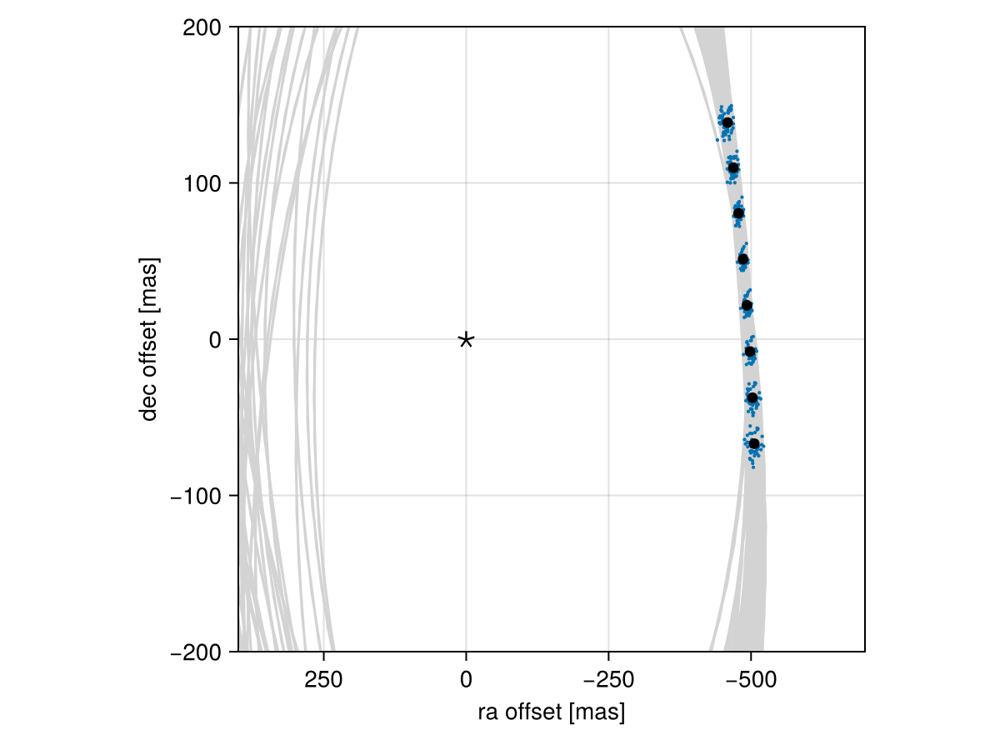

Posterior Predictive Checks
A posterior predictive check compares our true data with simulated data drawn from the posterior. This allows us to evaluate if the model is able to reproduce our observations appropriately. Samples drawn from the posterior predictive distribution should match the locations of the original data.
To demonstrate, we will fit a model to relative astrometry data:
using Octofitter
using Distributions
astrom_like = PlanetRelAstromLikelihood(Table(;
epoch= [50000,50120,50240,50360,50480,50600,50720,50840,],
ra = [-505.764,-502.57,-498.209,-492.678,-485.977,-478.11,-469.08,-458.896,],
dec = [-66.9298,-37.4722,-7.92755,21.6356, 51.1472, 80.5359, 109.729, 138.651,],
σ_ra = fill(10.0, 8),
σ_dec = fill(10.0, 8),
cor = fill(0.0, 8)
))
@planet b Visual{KepOrbit} begin
a ~ truncated(Normal(10, 4), lower=0, upper=100)
e ~ Uniform(0.0, 0.5)
i ~ Sine()
ω ~ UniformCircular()
Ω ~ UniformCircular()
θ ~ UniformCircular()
tp = θ_at_epoch_to_tperi(system,b,50420) # reference epoch for θ. Choose an MJD date near your data.
end astrom_like
@system Tutoria begin
M ~ truncated(Normal(1.2, 0.1), lower=0)
plx ~ truncated(Normal(50.0, 0.02), lower=0)
end b
model = Octofitter.LogDensityModel(Tutoria)
using Random
Random.seed!(0)
chain = octofit(model)Chains MCMC chain (1000×28×1 Array{Float64, 3}):
Iterations = 1:1:1000
Number of chains = 1
Samples per chain = 1000
Wall duration = 7.73 seconds
Compute duration = 7.73 seconds
parameters = M, plx, b_a, b_e, b_i, b_ωy, b_ωx, b_Ωy, b_Ωx, b_θy, b_θx, b_ω, b_Ω, b_θ, b_tp
internals = n_steps, is_accept, acceptance_rate, hamiltonian_energy, hamiltonian_energy_error, max_hamiltonian_energy_error, tree_depth, numerical_error, step_size, nom_step_size, is_adapt, loglike, logpost, tree_depth, numerical_error
Summary Statistics
parameters mean std mcse ess_bulk ess_tail r ⋯
Symbol Float64 Float64 Float64 Float64 Float64 Floa ⋯
M 1.1870 0.0912 0.0031 867.5980 645.1110 1.0 ⋯
plx 50.0001 0.0197 0.0006 1004.5500 676.1499 0.9 ⋯
b_a 11.5538 2.2340 0.1550 206.3983 239.6192 1.0 ⋯
b_e 0.1476 0.1074 0.0055 389.2323 536.0780 1.0 ⋯
b_i 0.6281 0.1609 0.0111 230.3539 165.2641 1.0 ⋯
b_ωy -0.0334 0.7311 0.0531 216.2186 644.9143 1.0 ⋯
b_ωx -0.0893 0.6970 0.0530 188.8622 402.3003 1.0 ⋯
b_Ωy -0.1006 0.7243 0.0917 54.7711 584.3616 1.0 ⋯
b_Ωx -0.0102 0.6872 0.0840 80.0952 556.2185 1.0 ⋯
b_θy 0.0746 0.0105 0.0003 1030.1069 758.9332 1.0 ⋯
b_θx -1.0040 0.1004 0.0030 1195.2192 447.0038 1.0 ⋯
b_ω -0.3634 1.8283 0.1150 314.4815 697.8230 1.0 ⋯
b_Ω -0.5096 1.8718 0.1951 136.6315 303.7759 1.0 ⋯
b_θ -1.4967 0.0073 0.0002 961.0457 738.6535 0.9 ⋯
b_tp 42994.6311 4959.1717 294.0453 340.8311 309.9359 1.0 ⋯
2 columns omitted
Quantiles
parameters 2.5% 25.0% 50.0% 75.0% 97.5%
Symbol Float64 Float64 Float64 Float64 Float64
M 1.0095 1.1243 1.1831 1.2495 1.3674
plx 49.9623 49.9863 49.9996 50.0133 50.0375
b_a 8.1263 9.9785 11.1380 12.9149 16.8151
b_e 0.0063 0.0566 0.1253 0.2303 0.3795
b_i 0.2312 0.5446 0.6346 0.7387 0.8937
b_ωy -1.0728 -0.7551 -0.0917 0.6931 1.0849
b_ωx -1.0475 -0.7440 -0.1915 0.5598 1.0769
b_Ωy -1.0539 -0.8097 -0.2296 0.6481 1.0463
b_Ωx -1.0658 -0.6290 -0.0776 0.6561 1.0711
b_θy 0.0562 0.0672 0.0739 0.0820 0.0953
b_θx -1.2065 -1.0686 -0.9978 -0.9319 -0.8216
b_ω -3.0137 -2.0494 -0.4580 1.0562 2.9903
b_Ω -3.0071 -2.3479 -0.2188 1.0082 2.9629
b_θ -1.5109 -1.5016 -1.4966 -1.4918 -1.4825
b_tp 30255.8253 40328.4755 44058.5934 46358.7275 50024.8362
We now have our posterior as approximated by the MCMC chain. Convert these posterior samples into orbit objects:
# Instead of creating orbit objects for all rows in the chain, just pick
# every twentieth row.
ii = 1:20:1000
orbits = Octofitter.construct_elements(chain, :b, ii)50-element Vector{Visual{KepOrbit{Float64}, Float64}}:
Visual{KepOrbit{Float64}, Float64}(KepOrbit(13.6, 0.0525, 0.758, -2.59, 0.496, 48600.0, 1.11), 49.9754933433884, 4.1273229377191975e6)
Visual{KepOrbit{Float64}, Float64}(KepOrbit(8.26, 0.314, 0.388, 1.54, 6.04, 45800.0, 1.26), 49.999800991343584, 4.125316419473559e6)
Visual{KepOrbit{Float64}, Float64}(KepOrbit(9.29, 0.269, 0.521, 1.55, 5.34, 43700.0, 1.27), 50.02271032284184, 4.123427112781079e6)
Visual{KepOrbit{Float64}, Float64}(KepOrbit(11.0, 0.0614, 0.61, -0.456, 4.16, 48400.0, 1.23), 49.987379164191935, 4.1263415575857256e6)
Visual{KepOrbit{Float64}, Float64}(KepOrbit(15.4, 0.00933, 0.895, -1.12, 0.323, 33200.0, 1.35), 49.97576982028893, 4.127300104465054e6)
Visual{KepOrbit{Float64}, Float64}(KepOrbit(9.43, 0.248, 0.576, -2.07, 3.42, 44500.0, 1.07), 49.99085948459269, 4.1260542852553157e6)
Visual{KepOrbit{Float64}, Float64}(KepOrbit(9.14, 0.157, 0.425, -2.88, 4.05, 44900.0, 1.27), 50.02366575224883, 4.1233483571868637e6)
Visual{KepOrbit{Float64}, Float64}(KepOrbit(10.1, 0.193, 0.475, -2.14, 2.8, 43200.0, 1.29), 49.988939698355175, 4.1262127431517993e6)
Visual{KepOrbit{Float64}, Float64}(KepOrbit(18.3, 0.125, 0.919, 1.42, 3.34, 50200.0, 1.35), 49.9651021380977, 4.1281812940141233e6)
Visual{KepOrbit{Float64}, Float64}(KepOrbit(11.2, 0.256, 0.62, -2.52, 3.02, 40600.0, 1.11), 49.99348409661838, 4.1258376711926744e6)
⋮
Visual{KepOrbit{Float64}, Float64}(KepOrbit(10.2, 0.0146, 0.421, 2.37, 4.22, 42500.0, 1.19), 50.011601791332055, 4.124343004661562e6)
Visual{KepOrbit{Float64}, Float64}(KepOrbit(12.1, 0.00995, 0.707, 2.86, 0.665, 47500.0, 1.27), 49.99626322068103, 4.125608329757696e6)
Visual{KepOrbit{Float64}, Float64}(KepOrbit(12.8, 0.2, 0.827, -0.251, 4.34, 49100.0, 1.33), 50.00555415678066, 4.1248417996389875e6)
Visual{KepOrbit{Float64}, Float64}(KepOrbit(14.3, 0.184, 0.827, 0.132, 0.0665, 36300.0, 1.22), 49.950947721220146, 4.129351081608699e6)
Visual{KepOrbit{Float64}, Float64}(KepOrbit(13.8, 0.125, 0.803, 2.81, 0.412, 46500.0, 1.17), 50.02743973365201, 4.123037299093512e6)
Visual{KepOrbit{Float64}, Float64}(KepOrbit(11.6, 0.0254, 0.662, -1.51, 0.854, 38800.0, 1.21), 50.01581879599231, 4.123995267203897e6)
Visual{KepOrbit{Float64}, Float64}(KepOrbit(13.0, 0.187, 0.798, 0.555, 0.122, 39800.0, 1.28), 50.02222032650778, 4.1234675041142874e6)
Visual{KepOrbit{Float64}, Float64}(KepOrbit(11.5, 0.146, 0.765, 1.41, 0.398, 44300.0, 1.27), 50.01415624808722, 4.1241323551847097e6)
Visual{KepOrbit{Float64}, Float64}(KepOrbit(11.5, 0.362, 0.658, 0.856, 5.88, 40500.0, 1.3), 49.98775114640698, 4.126310851549999e6)Calculate and plot the location the planet would be at each observation epoch:
using CairoMakie
epochs = astrom_like.table.epoch' # transpose
x = raoff.(orbits, epochs)[:]
y = decoff.(orbits, epochs)[:]
fig = Figure()
ax = Axis(
fig[1,1], xlabel="ra offset [mas]", ylabel="dec offset [mas]",
xreversed=true,
aspect=1
)
for orbit in orbits
Makie.lines!(ax, orbit, color=:lightgrey)
end
Makie.scatter!(
ax,
x, y,
markersize=3,
)
fig
Makie.scatter!(ax, astrom_like.table.ra, astrom_like.table.dec,color=:black, label="observed")
Makie.scatter!(ax, [0],[0], marker='⋆', color=:black, markersize=20,label="")
Makie.xlims!(400,-700)
Makie.ylims!(-200,200)
fig
Looks like a great match to the data! Notice how the uncertainty around the middle point is lower than the ends. That's because the orbit's posterior location at that epoch is also constrained by the surrounding data points. We can know the location of the planet in hindsight better than we could measure it!
You can follow this same procedure for any kind of data modelled with Octofitter.